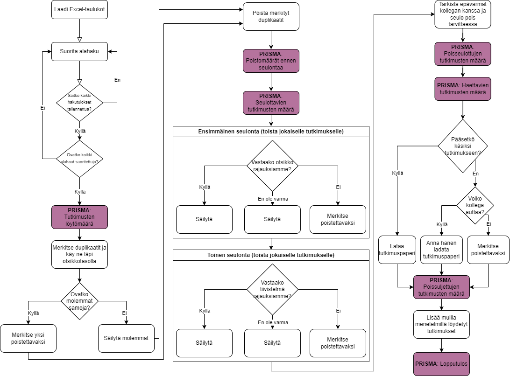
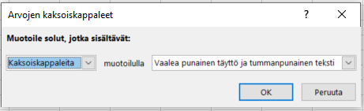
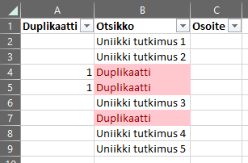
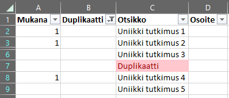
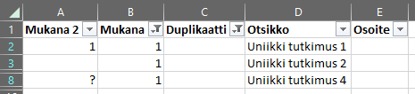

13 Hakujen suorittaminen

Hakeminen suoritetaan osahakukohtaisesti (haut 1-6). Jokaiselle haulle seurataan samaa prosessia:
- Laadi dokumentointityökalut, eli Excel-taulukot
- Suorita haku jokaisessa hakukoneessa
- Muotoile hakulausekkeet hakukoneeseen sopivaksi
- Joissain hakukoneissa voit saada kaikki tulokset ladattua kerralla, toisissa joudut tekemään haut sivukohtaisesti (ensimmäiset sata, toiset sata, jne.)
- Kirjaa tutkimusten löytömäärä PRISMA-kulkukaaviota varten
- Seulo pois duplikaatit
- Merkitse ja tarkista duplikaatit
- Poista kaikki paitsi yksi tulos jokaisesta varmistetusta duplikaattiryhmästä (niitä voi olla useampia kuin kaksi!)
- Kirjaa poistomäärä sekä jäljelle jäävien tutkimusten määrä PRISMA-kulkukaaviota varten
- Seulo otsikon pohjalta
- Säilytä epävarmat tutkimukset
- Seulo tiivistelmien pohjalta
- Säilytä epävarmat tutkimukset
- Tarkista epävarmat tutkimukset hankeryhmän kanssa ja seulo pois tarvittaessa
- Kirjaa poisseulottujen määrä sekä jäljelle jäävien tutkimusten määrä PRISMA-kulkukaaviota varten
- Hae ja lataa tutkimukset
- Jos et pääse tutkimukseen käsiksi, kysy ensin kollegalta apua. Jos hänkään ei pysty auttamaan, seulo tutkimus pois syyllä “Ei pääsyä”.
- Kirjaa poissuljettujen tutkimusten määrät syykohtaisesti PRISMA-kulkukaaviota varten
- Muista tallentaa haetut tutkimukset!
- Lisää tässä vaiheessa muilla menetelmillä löydetyt tutkimukset määrään
- Kirjaa lopullinen tutkimusmäärä PRISMA-kulkukaaviota varten
13.1 Osa 1: Haun suorittaminen
Tutustu haun kriteeristöön ja tietokantoihin. Tarkista varsinkin tietokantojen toimintaohjeet, jotta pystyt muokkaamaan hakulausekkeen sopivaan muotoon.
Laadi tarvittavat dokumentointi- ja tulostiedostot, esimerkiksi Excel-pohjaa käyttäen.
Muista dokumentoida prosessi hyvin tarkasti!
- Minä päivänä haku suoritettiin? Jos suoritat useamman päivän yli, merkitse jokaisena päivänä toteutetut tiedot erikseen (päiväkirjamaisesti).
- Mitä hakulauseketta käytettiin? Kirjaa muotoilemasi hakulauseke, ei hankkeelta saatu “geneerinen” lauseke.
- Jos mahdollista, linkkaa suoraan hakuun. Voit kopioida haun verkko-osoitteen.
- Miten hankkeen rajaukset toteutettiin haussa? Kirjaa kaikki kohdat, joihin olet laittanut “täppiä” tai jotka olet sisällyttänyt hakusanoihin, ja jotka liittyvät hakukriteeristöömme. Jos kriteeristön täyttyminen näkyy suoraan hakulausekkeesta, et tarvitse tehdä tätä erikseen.
- Jouduitko poikkeamaan hakukriteereistä jollain tavalla? Kirjaa kaikki poikkeamat!
Jos hakusi koskettaa useampaa hakukonetta (ja joudut siten suorittamaan haut vuorotellen), on helpointa lisätä tulokset yhteen yhtenäiseen tulos-Exceliin peräkkäin. Sinun ei tarvitse kirjata, mistä hakukoneesta löysit minkäkin tuloksen - kokonaismäärä hakukoneittain riittää (nämä yhdistetään joka tapauksessa haun lopussa yhdeksi summaksi).
PRISMA: Identification > Records identified from: > Databases (N = …)
Kirjaa tähän kuinka monta tulosta yhteensä löytyi hauilla.
Hakukonekohtaiset ohjeet hakemiselle löytyvät erikseen tältä ohjesivustolta.
Myöhemmän käsittelyn kannalta oleellisimmat tiedot ovat tutkimuksen otsikko, julkaisuvuosi sekä linkki tutkimukseen. Linkkinä suositellaan ensisijaisesti kestolinkkejä, esimerkiksi DOI-, URN- tai URI-numeroita. Jos näitä ei löydy tai ei ole saatavilla, myös tavallinen linkki käy.
13.2 Osa 2: Duplikaattien poisto
Aloita duplikaattien poisto vasta, kun olet suorittanut kaikki osahaun tietokantahaut! Muuten joudut tekemään tuplatyötä myöhemmin.
Excelissä voit tunnistaa ja poistaa duplikaatit automatisoidusti:
- Merkitse duplikaatit ensin: Valitse kaikki tulosten otsikot > Aloitus > Ehdollinen muotoilu > Solujen korostussäännöt > Arvojen kaksoiskappaleet… > valitse haluamasi muotoilutyyli > OK:

Tarkista jokaisen merkityn duplikaatin osalta, että ne todella ovat duplikaatteja (eikä esim. useampi tutkimus, jolla on sama hyvin geneerinen nimi mutta on todellisuudessa eri tutkimuksia).
Luo uusi sarake, johon merkitset duplikaatit (esim. numerolla 1). Voit sitten luoda suodattimen, jolla laitat duplikaatit piiloon: Valitse koko taulukko, mukaan lukien otsikot > Aloitus > Lajittele ja suodata > Suodata:

PRISMA: Identification > Records removed before screening (N = …)
Kirjaa tähän kuinka monta tulosta poistettiin duplikaatteina.
- Seuraavia kohtia varten oletetaan, että olet asettanut duplikaatit piiloon suodattimella (valitse nuoli duplikaattikirjauksen sarakkeen kohdalla > poista täppä suodattimen merkinnän vierestä, esim. 1 > OK)
13.3 Osa 3: Seulonta
Aloita seulonta otsikoiden pohjalta.
PRISMA: Screening > Records screened (N = …)
Kirjaa tähän kuinka monta tulosta on mukana ensimmäisessä seulonnassa ennen itse seulonnan aloittamista.
Tarkista jokaisen otsikon kohdalla, vastaako se olennaisimpia hakukriteerejämme: kohderyhmä, empiria (ei aina mainittu!) sekä aihealue. Jos olet epävarma, jätä tulos mukaan mutta merkitse epävarmuus taulukkoon jollain tavalla.
Yleensä seulonnassa tippuu pois suurin osa tuloksista. Helpointa voi tuolloin olla laittaa merkintä jokaisen mukaan tulevan tutkimuksen kohdalle (sen sijaan, että merkitsee ne, jotka eivät tulisi mukaan).

Jos olet ladannut tutkimuksen vuosiluvun, voit myös tarkistaa sen sopivuuden kriteeristöön samalla. Muista, että tässä vaiheessa halutaan seulota nopeasti pois suurin osa tuloksista - seuraavissa vaiheissa luetaan jäljelle jääviä tutkimuksia tarkemmin.
PRISMA:
Screening > Records excluded (N = …)
Kirjaa kuinka monta tulosta seulottiin pois.
Screening > Reports sought for retrieval (N = …)
Kirjaa kuinka monta tulosta jäi haettavaksi otsikkoseulonnan pohjalta. Älä tee tiivistelmäseulontaa ennen tätä vaihetta!
Kun olet seulonnut otsikon pohjalta, voit aloittaa tiivistelmien pohjalta seulomisen.
Jokaisen jäljelle jääneen tutkimuksen kohdalla, seuraa tutkimuksen linkkiä ja lue tiivistelmä.
Jos et pääse käsiksi tiivistelmään, kysy ensin kollegalta, voiko hän auttaa. Jos hänkään ei saa tiivistelmää esille, merkitse tulos ei-haettavaksi.
PRISMA: Screening > Reports not retrieved
Kirjaa kuinka monta tulosta ei voitu hakea. Erittele määrät syyn mukaan. Esimerkkisyitä: Ei pääsyä tietokantaan, virheellinen linkki, lähdettä ei löytynyt.
Screening > Reports assessed for eligibility
Kirjaa kuinka monta tulosta voidaan hakea ja seulota tiivistelmän pohjalta.
Jos tiivistelmä vastaa hakukriteeristöämme, merkitse tulos haettavaksi. Jos olet epävarma, jätä tutkimus mukaan mutta merkitse epävarmuus taulukkoon jollain tavalla.

Tässä vaiheessa voit tarkistaa epävarmat tutkimukset: voit lukea tutkimusta tarkemmin, ja/tai kysyä kollegalta apua. Jos et itse osaa päättää, kuuluuko tutkimus mukaan vai ei, kysy kollegalta - viime sijassa teemme päätöksen ryhmänä.
Yleensä tekstissä mahdollisesti esiintyvät luvut “Research Design”, “Research Questions” tai “Methods and Materials” pystyvät vastaamaan kysymykseen, tulisiko tutkimus ottaa mukaan vai ei. Asia ei aina kuitenkaan ole selkeä, joten on parempi keskustella mukaanottamisesta ryhmässä kuin tehdä epävarma päätös.
Lopussa pitäisi jokaiselle tutkimukselle olla määritelty, onko se mukana vai ei – toisin sanoen, epävarmoja tuloksia ei pitäisi lopuksi olla taulukossa ollenkaan.
PRISMA: Screening > Reports excluded > syittäin (N = …)
Kirjaa kunka monta tulosta seulottiin pois tiivistelmän pohjalta, ja mistä syystä. Ryhmitä syyt yhteen. Esimerkkisyitä: Ei vastaa kohderyhmää, ei ole empiirinen, ei täytä julkaisuaikakriteeriä, ei ole vertaisarvioitu.
13.4 Osa 4: Loppukirjaukset ja tutkimusten lataaminen
Voit nyt ladata jokaisen tutkimuksen PDF-tiedoston tai vastaavan omalle koneellesi. Vaihtoehtoisesti voit lukea tutkimuksia myös verkossa lataamatta tiedostoja – kyse on omasta mieltymyksestäsi, mutta yleensä tiedoston löytyminen koneen kansiosta helpottaa työtä.
PRISMA: Included > Studies included in review (N = …)
Kirjaa kuinka monta tulosta jäi jäljelle koko prosessin jälkeen. Voit joutua päivittelemään tätä numeroa hankkeen edetessä, jos löydämme muista lähteistä tärkeitä tutkimuksia jotka sisällytetään erikseen kirjallisuuskatsaukseen.
Täytä myös tässä vaiheessa tuloskohtainen dokumentointi-Excel (löytyy Teams-kansiosta). Hankkeen kannalta tarvitsemme jokaisesta tutkimuksesta seuraavat tiedot:
- Tekijöiden nimet
- Julkaisuvuosi
- Tutkimuksen otsikko
- Julkaisutyyppi
- Linkki tutkimukseen
- Tiedonkeruun muoto
- Huomioita tiedonkeruun muodosta
- Kohdepopulaatio (= kohderyhmä)
- Otoskoko
- Otantamenetelmä
- Kohderyhmän yhteydenottotapa (miten kohderyhmä tavoitettiin?)
- Vastausmuistutusten määrä (kuinka usein kohderyhmää muistutettiin osallistumaan tutkimukseen, jos tällaista tehtiin?)
Nyt olet valmis hakuprosessin kanssa! Seuraavaksi voit analysoida tuloksia – ja analyysiprosessissa saat paljon vapaammat kädet kuin haussa.